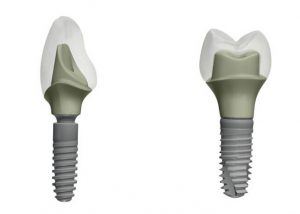
CUIDADOS PARA CADA SORRISO
Especialidades Dentárias.
Tratamentos de Excelência
Em todos os nossos tratamentos, recorremos a tecnologia de última geração e a consumíveis originais de marcas certificadas, assegurando rigor, segurança e previsibilidade clínica.
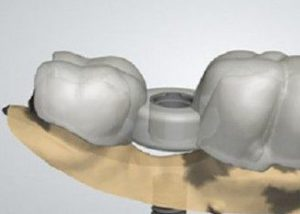
Cirurgia Guiada de Implantes
Conhecer o tratamento no site original ↗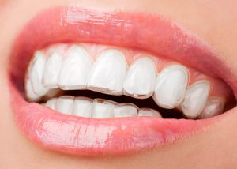
Ortodontia | Alinhadores Invísiveis
Conhecer o tratamento no site original ↗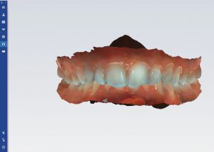
Facetas ou Lentes de Contacto Dentárias
Conhecer o tratamento no site original ↗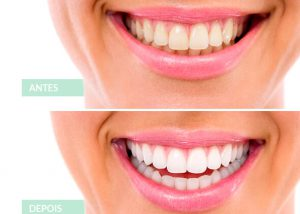
Branqueamento Dentário
Conhecer o tratamento no site original ↗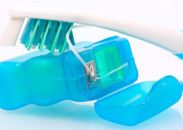
Protocolo GBT | Higiene Oral Avançada
Conhecer o tratamento no site original ↗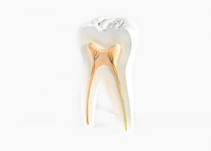
Dentisteria
Conhecer o tratamento no site original ↗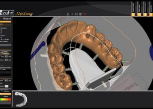
Prótese Fixa CAD/CAM
Conhecer o tratamento no site original ↗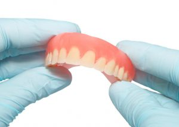
Prótese Removível
Conhecer o tratamento no site original ↗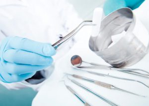
Cirurgia Oral
Conhecer o tratamento no site original ↗Endodontia
Conhecer o tratamento no site original ↗Odontopediatria
Conhecer o tratamento no site original ↗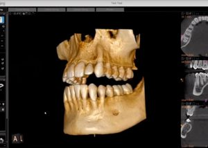
Radiologia Digital
Conhecer o tratamento no site original ↗
ESTAMOS AQUI PARA SI
Marque a sua consulta.
Indique os seus dados e a data pretendida. A equipa confirma a disponibilidade por WhatsApp.
A CONFIANÇA DE QUEM NOS VISITA
O que dizem sobre nós.
EXCELENTE★★★★★
Com base em 88 avaliações
no site original
★★★★★
Tratamento exemplar!
★★★★★
Muito profissionais. Excelente equipa. Sou cliente há alguns anos e já tive situações graves como abcessos e fui muito bem socorrido. Continuem o excelente trabalho.
★★★★★
Excelente experiência na clínica! Gostaria de deixar um elogio especial à Dra. Susana pelo profissionalismo, atenção e cuidado em todas as consultas. É uma profissional extremamente atenciosa, calma e dedicada, transmitindo muita confiança e segurança ao longo de todo o tratamento. Toda a equipa da clínica foi sempre muito simpática e acolhedora. Faz realmente a diferença encontrar um espaço onde nos sentimos bem acompanhados e cuidados. Recomendo muito 💙
★★★★★
Após vários anos a lidar com trauma de dentistas foi aqui que encontrei a clínica que me acolheu e tratou com todo o cuidado e profissionalismo. Muito humanos e transparentes, já não troco por nada!
★★★★★
Recomendo a Clínica, pela excelência profissional e acima de tudo, pelo cuidado e atenção que nos sãos sempre prestados!
★★★★★
A equipa é muito profissional, atenciosa e faz-nos sentir completamente à vontade. Recomendo sem dúvida!
Avaliações reproduzidas do site original, consultado em 26 de outubro de 2026. Consulte o Google para ver as avaliações mais recentes.
ESTAMOS PERTO DE SI
Vamos cuidar
do seu sorriso?
A sua próxima consulta começa aqui.
Visite-nos na Amadora
Pcta. Dr. Gentil Martins, 2, Loja D2720-201 AmadoraComo chegar ↗
Fale connosco
214 956 023Chamada para a rede fixa nacional932 465 905Chamada para a rede móvel nacionalclinicacyrne@clinicacyrne.comTempo para si
- Segunda a sexta
- 09:00 – 13:00
14:30 – 19:00 - Sábado
- 09:00 – 13:00
- Domingo
- Encerrado
Tem uma urgência dentária?
Ligue-nos para avaliar a disponibilidade ↗